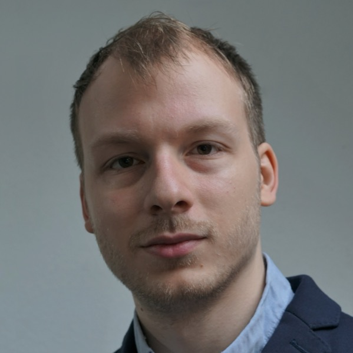
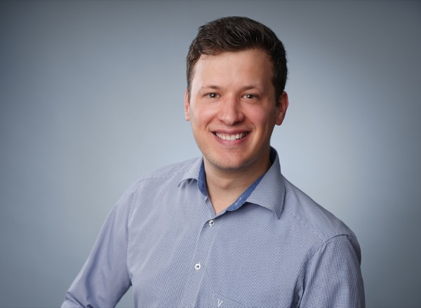
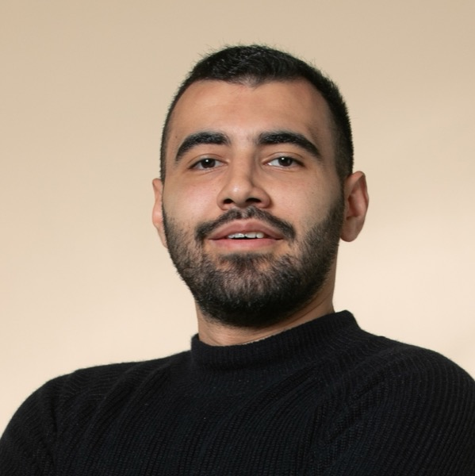
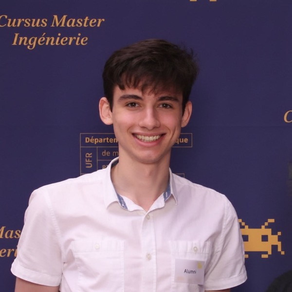
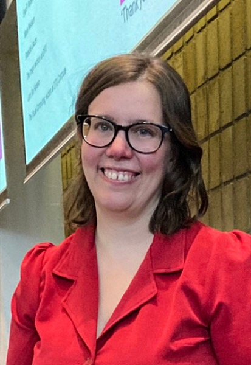
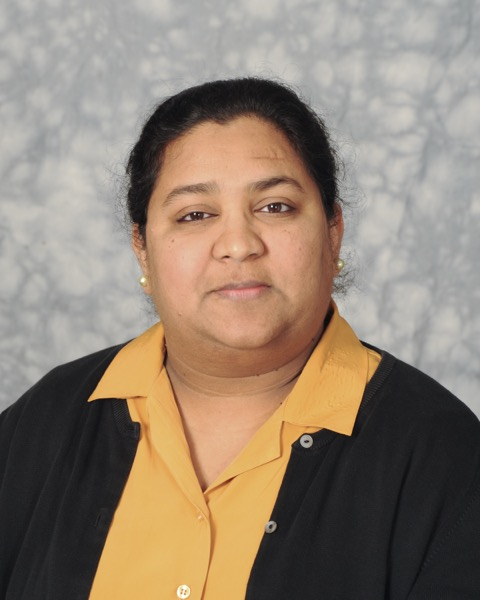

Registration
The Autumn School is fully virtual. Registration has two steps.
Step 1 · Fill in the registration form
Please complete the Autumn School registration form first.
👉 Registration FormStep 2 · Register for the Zoom webinars
Each day is hosted as a separate Zoom webinar, so please register for each day you would like to attend.
Speakers

John Kalkhof
Inria Center at Université Côte d'Azur, Sophia Antipolis, France
Day 1 · Neural Cellular Automata
John Kalkhof is a postdoctoral researcher at Inria, working on lightweight and robust AI methods for medical imaging and disease progression modeling with a focus on accessibility and equity. His work has been recognized with the IPMI François Erbsmann Prize and the MICCAI Young Scientist Award.

Henry J. Krumb
Visual Computing, Computer Science Department, Technical University of Darmstadt
Day 1 · Neural Cellular Automata
Henry Krumb is a first year postdoctoral researcher at Technische Universität Darmstadt, where he investigates AI methods in medical image processing and computer-assisted surgery. A particular focus of his work is on integrating Neural Cellular Automata (NCA) into surgical pipelines.

Marawan Elbatel
The Hong Kong University of Science and Technology (HKUST)
Day 1 · Neural Cellular Automata
Marawan Elbatel is a PhD candidate at HKUST. His research focuses on data-efficient medical image analysis, enabling reliable diagnosis from accessible imaging, particularly in African healthcare settings.

Jonas Mehtali
University of Strasbourg, France
Day 1 · Neural Cellular Automata
Jonas Mehtali is a PhD student at the University of Strasbourg supervised by Caroline Essert. His research focuses on computer-assisted thermal ablation planning, and he developed C-NCA, an NCA-based method for fast simulation, presented at MICCAI 2025.

Aasa Feragen
Technical University of Denmark
Day 2 · Grant Writing
Aasa specializes in AI errors and debugging, aka responsible AI, in medical imaging. Her recent work includes development, deployment and stress-testing of fetal ultrasound risk prediction models for e.g. fetal growth or preterm birth.
Yipei Wang
University College London
Day 2 · Vibe Coding in Medical Imaging
Yipei Wang is a Lecturer at University College London, with a PhD in Biomedical Engineering from the University of Oxford. Her research focuses on AI for healthcare, particularly prostate cancer imaging.

Tanveer Syeda-Mahmood
Stanford University
Day 3 · Multimodal Foundational Models
Dr. Tanveer Syeda-Mahmood is an IBM Fellow, and Adjunct Professor at Stanford University. She is also a Distinguished Visiting Professor at Center for Brain Research, Indian Institute of Science. Dr. Syeda-Mahmood is a pioneer in medical imaging, multimodal AI, and healthcare AI, and a MICCAI, IEEE, and AIMBE Fellow. Her current research focuses on trustworthy multimodal foundation models for medical applications.
RISE-MICCAI Autumn School Q&A
Q1: Who can attend the Autumn School?
A: The Autumn School is open to students, early-career researchers and anyone interested in medical image computing. We particularly encourage participants from low- and middle-income countries and underrepresented groups to join.
Q2: Do I need to register for every day separately?
A: Yes. Please fill in the registration form once, and then register for the Zoom webinar of every day you plan to attend, as each day runs as its own webinar. You can find all links in the Registration section.
Q3: What time zone are the sessions in?
A: All sessions run from 13:00 to 17:00 UTC. Please convert to your local time zone; for example, this is 14:00 to 18:00 CET.
Q4: Will the Autumn School sessions be recorded and shared?
A: Yes, the majority of the sessions will be recorded and shared. However, some sessions may not be made available online at the request of the speaker.
Q5: Will certificates of attendance be issued?
A: Yes, certificates will be issued upon request to participants who attended the sessions. To request a certificate, please contact David Duenas-Gaviria (David.Duenas-Gaviria@ukbonn.de).
Q6: Do I need to prepare anything for the hands-on tutorials?
A: Each tutorial has its own website with materials and setup instructions, linked from the Schedule. Please check these pages before the session; any additional preparation will be announced there.
Q7: I have another question. Who can I contact?
A: Please reach out to the organisers listed in the Organisers section, or email David.Duenas-Gaviria@ukbonn.de.
Code of Conduct
RISE-MICCAI Autumn School is dedicated to providing a harassment-free experience and safe environment for all, regardless of race, cultural affiliations, gender, nationality, beliefs, age, or disability. Indecent imagery is not appropriate at any of the Academy’s events including virtual and in-person events.
All attendees, speakers, and volunteers are expected to comply with this code of conduct and violations of its standards may result in sanctions or expulsion from participating in events, at the discretion of the Academy Team. Upholding the standards of behavior is mandatory to maintain RISE's integrity and create a positive environment.
Expected behavior
All attendees, speakers, and volunteers at RISE events must:
- Behave professionally and responsibly towards each other, both in-person and online, during all formal and informal social activities, regardless of location.
- Respect each other and avoid making judgments based on race, gender, nationality, beliefs, age, or disability.
- Refrain from any forms of harassment, bullying, or discrimination towards fellow participants.
- Adhere to the guidelines and instructions given by RISE organizers and staff during events.
- Maintain confidentiality of any sensitive information shared during events.
- Avoid engaging in any illegal or unethical behavior.
Unexpected behavior
- Behaving in a manner that is disruptive or disrespectful towards other participants, staff, or the event itself.
- Using language that is inappropriate, disrespectful, or offensive towards other participants, staff, or the event itself.
- Engaging in any illegal or unethical behavior, such as theft, plagiarism, vandalism, or fraud.
- Disobeying or ignoring the guidelines and instructions given by RISE organizers and staff during the event.
- Engaging in any behavior that may pose a threat to the safety or security of other participants, staff, or the event itself.
- Intentionally causing damage to the event venue, equipment, or other property.
- Engaging in any form of inappropriate or unwanted physical contact towards other participants or staff.
- Violating the confidentiality of any sensitive information shared during the event.
- Using RISE events or platforms for personal or commercial gain without prior authorization from the organizers.
RISE Autumn School Organisers
David Duenas-Gaviria
School Coordinator
University Hospital Bonn, Germany